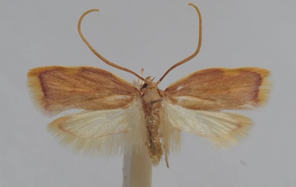

Австрійський ентомолог Петер Гуемер виявив новий вид молі, яку понад століття вважали поширеною Carcina quercana.
Науковець назвав його Carcina ingridmariae - на честь своєї дружини Інгрід Марії, присвятивши відкриття 42-й річниці їхнього весілля, повідомляє Phys.org.
"Це, без сумніву, найгарніший вид, який я зустрічав за всю свою наукову кар’єру", – сказав він.
Міль має яскраве рожево-жовте забарвлення, розмах крил близько 2 см і мешкає у східному Середземномор’ї - в Хорватії, Греції та Туреччині. Її личинки, ймовірно, живляться різними видами дуба
Від близького родича новий вид відрізняється понад 6% у ДНК та особливостями морфології, зокрема в будові статевих органів. Відкриття стало можливим лише після генетичного аналізу.
За 35 років роботи Гуемер описав понад 200 нових видів комах у Європі. Статтю про Carcina ingridmariae опублікували в журналі Alpine Entomology.
Раніше повідомлялося, що нове дослідження ДНК встановило, що норвезький лемінг - маленький мешканець тундри - еволюціонував лише близько 35 тисяч років тому.